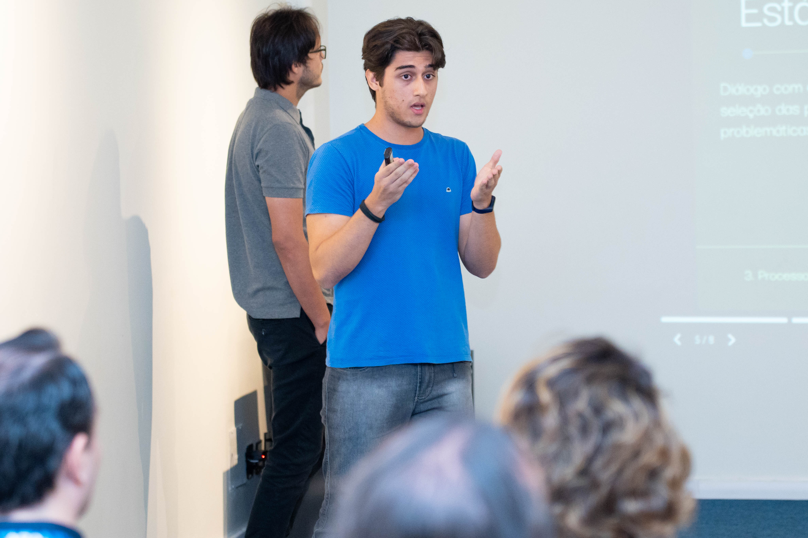

Prazer, Guilherme!

Hi! It's me 👆
Eu estou no caminho para me tornar um Full-Stack Developer.
Sou Técnico em T.I formado pela ETE Porto Digital e atualmente estou cursando Ciência da Computação na UNINASSAU e aprendendo mais sobre novas tecnologias WEB e pretendo aprender mais sobre as tecnologias mais usadas no mercado. Também estou no caminho para conseguir minha 1ª vaga!
Download Resume